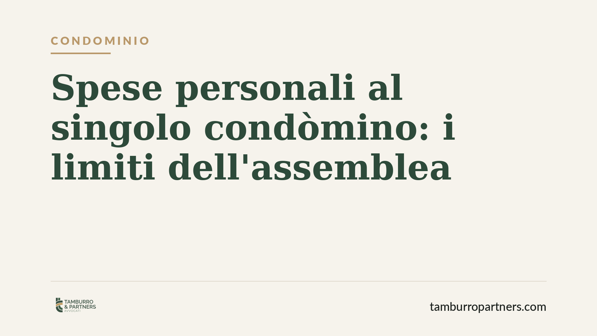

L'assemblea può addebitare spese personali a un solo condòmino?
Il Tribunale di Padova, con la sentenza n. 1701/2025, ha ribadito un principio spesso ignorato nella pratica: l'assemblea non può caricare su un singolo condòmino spese che riguardano rapporti personali, come un presunto danno o un credito controverso. Serve un titolo giudiziario. Vediamo perché la delibera che lo fa è nulla e come tutelarsi.

Il caso
Capita più spesso di quanto si pensi. L'assemblea, magari su spinta dell'amministratore, decide di addebitare a un solo proprietario una somma legata a una vicenda che lo riguarda personalmente: un danno che gli si attribuisce, un rimborso preteso, una spesa che l'assemblea ritiene di sua competenza.
Il Tribunale di Padova, con la sentenza n. 1701 del 2025, ha chiarito che questa prassi è illegittima. L'assemblea non è un tribunale e non può decidere in autonomia chi deve pagare cosa quando la questione esula dalla gestione delle parti comuni.
Inquadramento normativo
I poteri dell'assemblea sono tassativi. L'art. 1135 del codice civile elenca le materie su cui il collegio dei condòmini può deliberare: nomina e revoca dell'amministratore, approvazione del preventivo e del consuntivo, opere di manutenzione straordinaria. Nulla di più.
La ripartizione delle spese, poi, segue le regole dell'art. 1123 cod. civ.: le spese per la conservazione e il godimento delle parti comuni si dividono tra tutti i condòmini in proporzione al valore delle rispettive proprietà (i cosiddetti millesimi), salvo diverso accordo. La norma parla di spese *comuni*. Non contempla la possibilità di scaricare su un singolo un onere che nasce da un rapporto personale.
Quando l'assemblea addebita a un proprietario una somma che presuppone l'accertamento di una sua responsabilità - ad esempio un danno che avrebbe causato - sta esercitando un potere che non ha. Quel potere spetta al giudice. La delibera che lo fa è affetta da nullità, perché ha un oggetto impossibile: l'assemblea si arroga una competenza estranea alle sue attribuzioni.
Perché la distinzione conta
È importante non confondere due situazioni diverse.
Un conto è la spesa comune ripartita male, per esempio applicando criteri sbagliati o millesimi errati. In questo caso la delibera è di regola annullabile e va impugnata entro trenta giorni davanti al tribunale, come previsto dall'art. 1137 cod. civ.
Altro conto è l'addebito di una spesa che *non è comune*, ma personale. Qui il vizio è più grave: la delibera è nulla, quindi priva di effetti fin dall'origine, e la nullità può essere fatta valere anche oltre i trenta giorni, senza limiti di tempo.
La differenza è sostanziale. Chi si vede recapitare un addebito ingiusto e lascia scadere i termini pensando di aver perso ogni tutela, spesso non sa che una delibera nulla resta impugnabile.
Implicazioni pratiche
Per il singolo proprietario, la sentenza conferma un baluardo importante: nessuno può trasformare l'assemblea in una sede di giustizia privata. Se il condominio ritiene di vantare un credito verso un condòmino per una vicenda personale, deve rivolgersi al giudice e ottenere un titolo. Non può bypassare questo passaggio con una votazione a maggioranza.
Per l'amministratore e per il condominio nel suo complesso, il messaggio è altrettanto chiaro: deliberare addebiti personali espone a impugnazioni, a spese legali e alla vanificazione del recupero. È una scorciatoia che non porta da nessuna parte.
Cosa fare in concreto
- Leggete con attenzione il verbale. Individuate se la spesa addebitata riguarda le parti comuni o un rapporto personale che vi coinvolge singolarmente.
- Verificate il fondamento dell'addebito. Se manca una sentenza o un titolo che accerti la vostra responsabilità, la delibera che vi carica la spesa è probabilmente viziata.
- Distinguete nullità e annullabilità. Per l'annullamento agite entro trenta giorni; per la nullità potete intervenire anche dopo, ma non attendete oltre il necessario.
- Conservate ogni documento. Verbali, riparti, comunicazioni dell'amministratore: sono la base di ogni difesa.
- Consigliamo di far esaminare la delibera prima di pagare. Un versamento eseguito può complicare il quadro; una valutazione preventiva evita passi falsi.
La gestione condominiale vive di equilibri delicati. Conoscere i confini dei poteri assembleari è il modo migliore per evitare contenziosi e per reagire con efficacia quando quei confini vengono superati.
---
*Contributo informativo a cura di Tamburro & Partners - Avv. Giuseppe Tamburro. Non costituisce parere legale.*
Ogni condominio ha una storia a sé.
Se gestisci un'amministrazione e vuoi un confronto su una specifica questione condominiale, scrivi allo studio. Ti rispondiamo entro un giorno lavorativo.